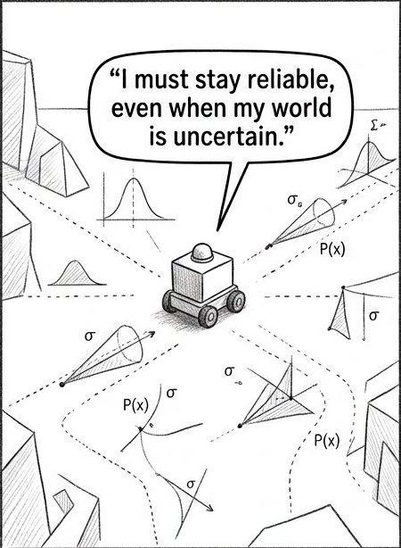
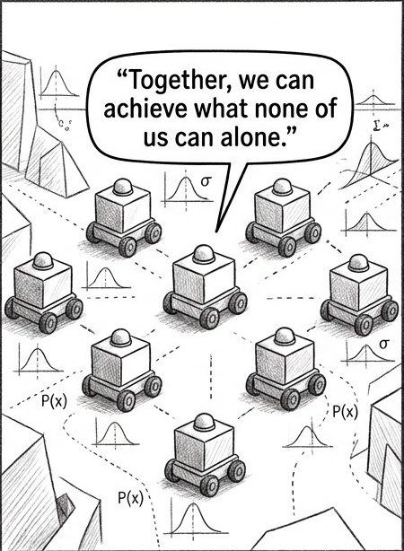
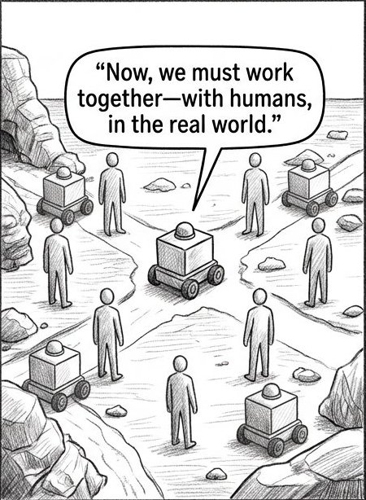
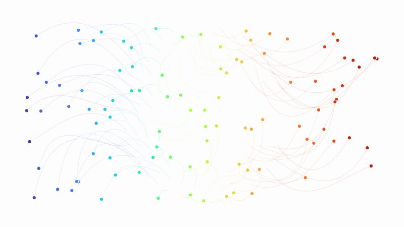

New NSF grant on safe AI for autonomous underwater vehicles
A three-year, $575,000 NSF award for faster decision making and motion planning for self-driving underwater vehicles, with experiments at the IIHR Wave Basin. Iowa Now story
I am Venanzio Cichella, Associate Professor of Mechanical Engineering at the University of Iowa. I direct the Cooperative Autonomous Systems Lab, where my students and I take cooperative control, collision avoidance, optimal control and learning from theory to experiments on real robots.

Dependable vehicles, coordinated teams, and validation on hardware in contested and congested environments.

Adaptive and robust control for vehicles with uncertain dynamics: submarine maneuvering, internal-model control, PDE-based optimal control with Bernstein surfaces.

Optimal multi-vehicle motion planning with Bernstein approximants and safe, coordinated maneuvering of multirotor teams.

Learning-enabled planning and control, human–autonomy studies, and experiments on physical vehicles, including the Joubert BB2 submarine.

Bernstein polynomial approximants let us plan collision-free, time-coordinated trajectories for large teams, here 100 vehicles spelling out the lab’s name.
A three-year, $575,000 NSF award for faster decision making and motion planning for self-driving underwater vehicles, with experiments at the IIHR Wave Basin. Iowa Now story
Mission-driven, resilient field autonomy for cooperative autonomous systems, Department of Electrical and Computer Engineering.
With Amirreza Fahim Golestaneh and Caterina Lamuta, on Cosserat-rod modeling of twisted and coiled artificial muscles.
With Isaac Kaminer, António Pascoal and Naira Hovakimyan. Forthcoming from Springer Nature in 2027.